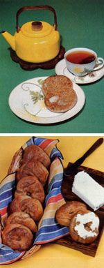

Liven up your midwinter meals and snacks with some wonderful homemade... Bagels and English Muffins
Even though the nearest store is 120 miles from our Alaskan home-and our one fall shopping trip must last the family for seven months-we manage to provide ourselves with all kinds of special goodies during the long winter. For example, instead of buying such "luxury" items as bagels-and English muffins, I keep the cost of our grocery bill down by baking the delicious breads at home.
The fact is that once an ambitious chef overcomes his or her fear of the unknown, both of the distinctive "rolls" are extremely easy to make and require no special equipment. (You will find, though, that a tuna can-opened on both ends-serves as an excellent muffin cutter.)
To prepare about 24 muffins, add 1/2 cup (1 stick) of butter, 2-1/2 teaspoons of salt, and 1/4 cup of honey to 2 cups of scalded milk. Cool the liquid to lukewarm, and stir in 2 packages of yeast dissolved in 1/2 cup of tepid water . . . 2 beaten eggs ... and four cups of sifted whole wheat flour. When all the ingredients are blended well, knead in another 3 to 4 cups of flour . . . and then let the dough rise until it's doubled in bulk.
When it's "up to size", cut the sweet-smelling lump into two sections ... roll each piece out until it's about a quarter inch thick . . . and use your converted tuna can to cut the individual muffins. (Knead the trimmings until they hold together . . . roll them out . . . cut more disks . . . and repeat the process until all the dough is used up.)
Next, cover the dough "patties" and let them rise for about half an hour. When the time is up, sprinkle cornmeal on an ungreased griddle, cook the muffins until their undersides are unevenly dark brown, then turn them over and "toast" the tops.
Preparing bagels involves two separate cooking steps, but the chewy goodness of the delicacies is more than worth the extra effort involved in making them!
Dissolve 1 package of yeast and 2 tablespoons of honey in 2 cups of warm water. Add 2 cups of whole wheat flour and 2 teaspoons of salt . . . then stir the mixture until a soft dough is formed. Turn it out on a floured board, and knead the bagels-to-be-adding up to 3 more cups of flour as necessary-to form a firm and nonsticky dough. Let it rise until the mass doubles in size-usually about 1-1/2 hours-then punch it down and knead some more. Divide the finished dough into 12 to 14 even pieces and roll them into cylinders of about six inches in length . . . which you can then shape into rings. (Moisten the ends slightly with water to fasten them securely together.)
Now, in a deep pot, boil 3-1/2 quarts of water with 1 teaspoon of salt added. After the shaped rings have been allowed to rise for about 15 minutes, drop them into the water and boil them for 3 minutes, turning often.
Once that's accomplished, sprinkle (if you like) poppy seeds, sesame kernels, or dried, chopped onions over the bagels . . . and bake them on a well-greased cookie sheet for 25 minutes-until the breads are a golden brown-at 425 °F.
Naturally, we like to enjoy both of these hearty breads spread with cream cheese, so-once the few precious, store-bought packages of the dairy treat are gone-we rely on a homemade variety that's very tasty.
I simply make yogurt from dry milk, and hang it (over a bowl) in a cheesecloth bag for about 12 hours! The result is tangier than the commercial spread, but equally delicious . . . especially when served with blueberry and other jams. (The whey that drips out of the suspended yogurt is either used in soup or fed to our pack of sled dogs, who consider it a very special treat!)
We find that eating a variety of breads livens up our menus . . . and fresh-baked bagels and English muffins are, by far, our favorite ways to partake of the "staff of life"!
|
 |
|
|